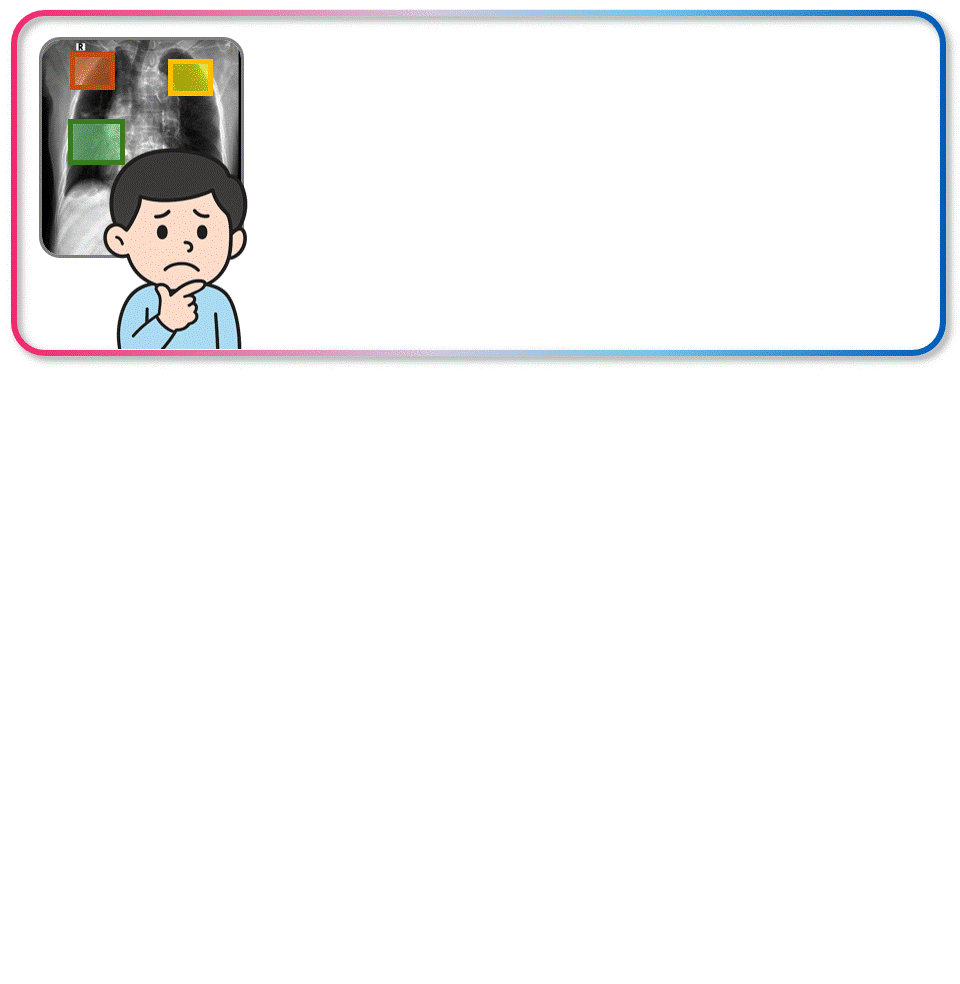
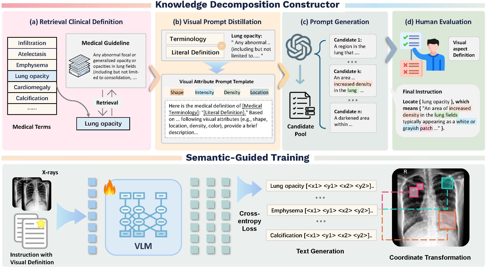
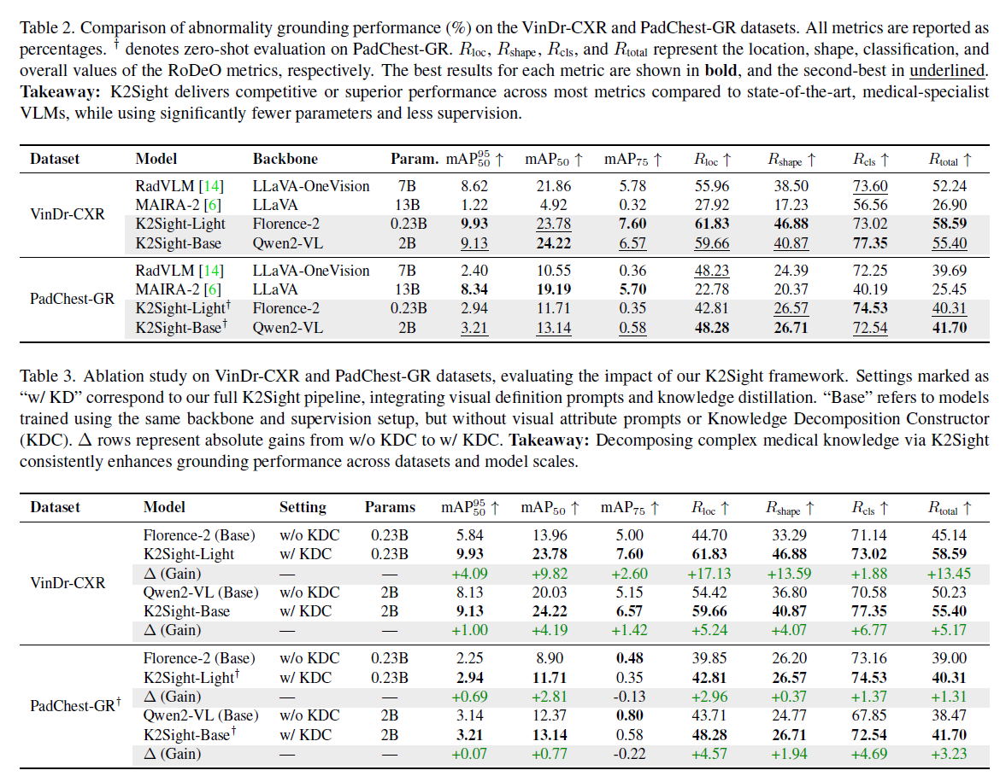
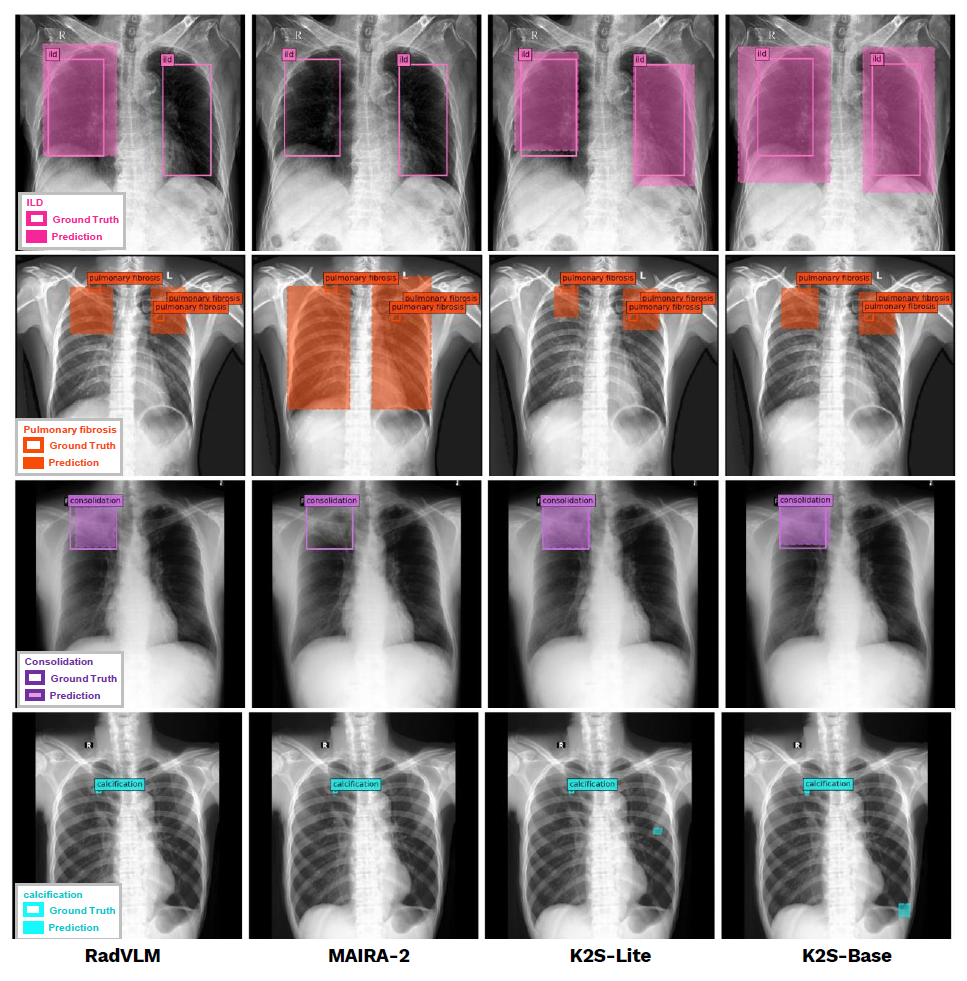
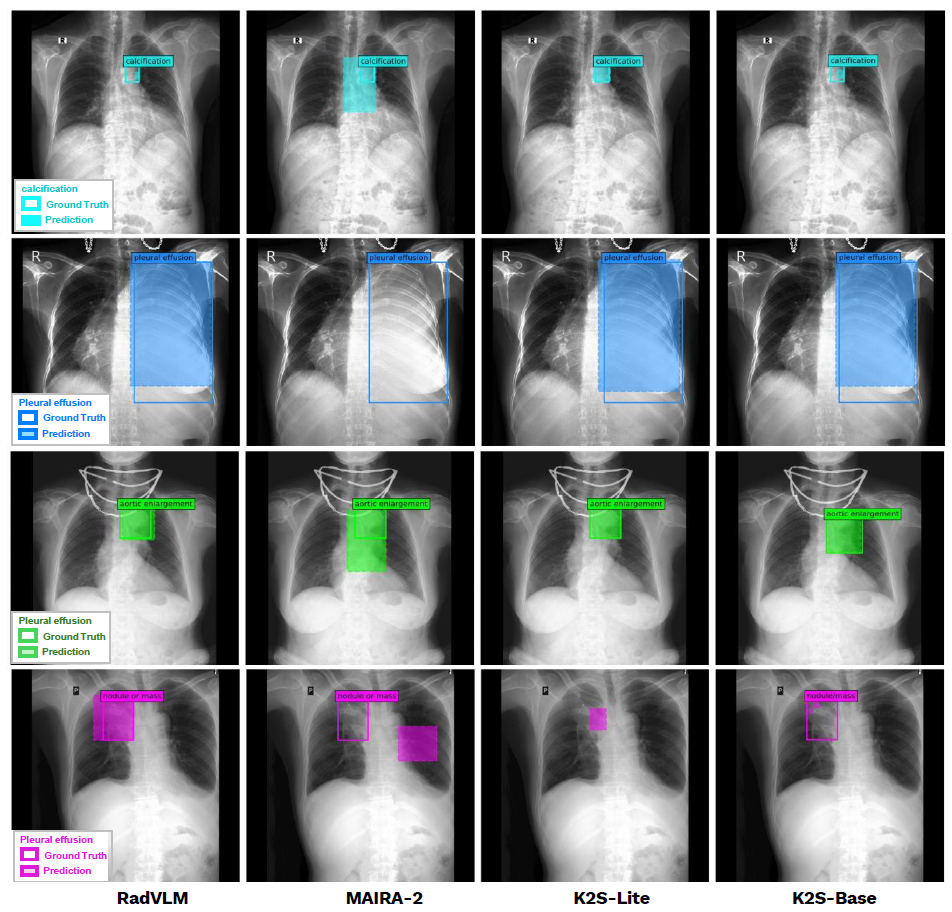

(1) Comparative performance analysis with other state-of-the-art (SOTA) methods and ablation studies of our framework. (2) Visualization of results. We show results on both our K2Sight-lite and base model with other SOTA methods.



@misc{li2025knowledgesightreasoningvisual,
title={Knowledge to Sight: Reasoning over Visual Attributes via Knowledge Decomposition for Abnormality Grounding},
author={Jun Li and Che Liu and Wenjia Bai and Mingxuan Liu and Rossella Arcucci and Cosmin I. Bercea and Julia A. Schnabel},
year={2025},
eprint={2508.04572},
archivePrefix={arXiv},
primaryClass={cs.CV},
url={https://arxiv.org/abs/2508.04572}, }
@misc{li2025enhancingabnormalitygroundingvision,
title={Enhancing Abnormality Grounding for Vision Language Models with Knowledge Descriptions},
author={Jun Li and Che Liu and Wenjia Bai and Rossella Arcucci and Cosmin I. Bercea and Julia A. Schnabel},
year={2025},
eprint={2503.03278},
archivePrefix={arXiv},
primaryClass={cs.CV},
url={https://arxiv.org/abs/2503.03278}, }